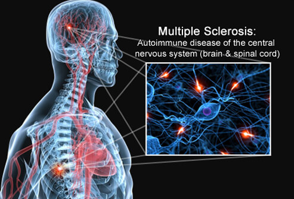
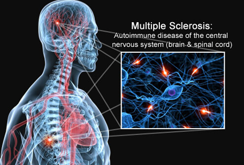

The Neurology service is recognised as one of the strongest in Australia and has an international recognition for its work in stroke, multiple sclerosis and epilepsy.
Neurology services include:
- Stroke Care Unit (SCU)
- Telestroke Service
- Multiple Sclerosis Program
- Epilepsy Program
- Movement Disorders Program
- Clinical Neurophysiology/Peripheral Neuropathy Program
- Neurovestibular Program
- Neurointervention Program
Specialized services
 


Stroke Care Unit
The Stroke Care Unit (SCU) treats approximately 800 inpatients a year and has an international reputation for acute therapy research and clinical trials.
Clinical activities include caring for stroke patients and clinical trials related to primary stroke care and secondary prevention.
The Stroke Outpatient Clinic provides a high-quality outpatient service to follow up acute stroke patients.
Headed by Professor Dominic Rowe, the Stroke Research Program has established an international reputation.
<
Multiple Sclerosis Program
The Multiple Sclerosis Program incorporates both clinical and research activities. The program provides personalised, comprehensive and ongoing care for people with MS.
A dedicated MS Outpatient Clinic runs in conjunction with MS Victoria. It provides a multidisciplinary approach through physiotherapy and bladder care management in addition to medical review. We accept referrals from across the state and also offer a consultancy service to Box Hill Hospital.
Neurovestibular Program
The Neurovestibular Program aims to investigate ocular motility and has a specific focus on vestibular reflex activity and the effects of cognitive set and function on the performance of saccades, smooth pursuit and vestibular eye movements.
The program is investigating attention and hemispheric influences on vestibular, smooth pursuit and saccadic eye movements in normal subjects and patients with Parkinson's disease, Huntington's disease, melancholic depression, Asperger's disease and autism.
Clinics
The appointment days for different neuro types are given below:
| Neuro type | Appointment Days |
|---|---|
| MS and Neuro Immunology | Mon |
| Neuro-Opthalmology | Fri |
| Neurology | Tue |
| Neurology Rapid | Mon |
| Neurolomuscular | Wed |
| Stroke Follow Up | Fri |